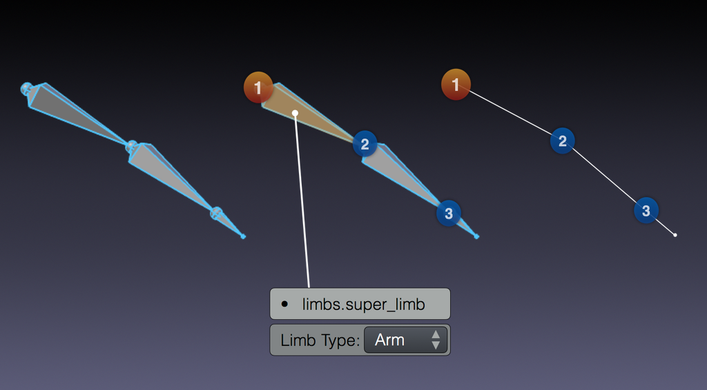
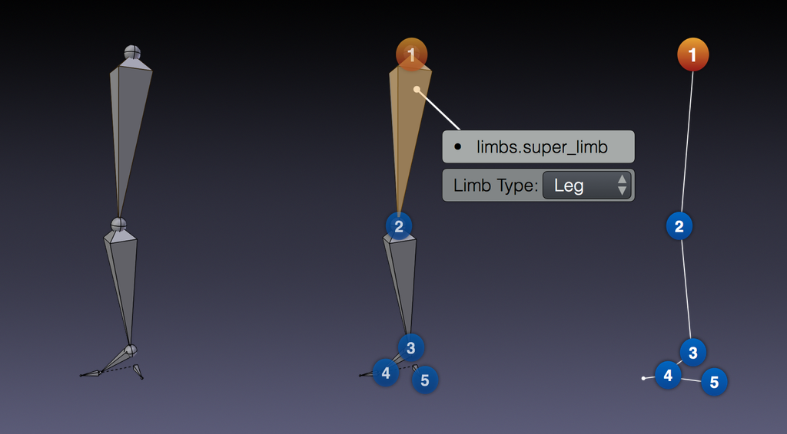
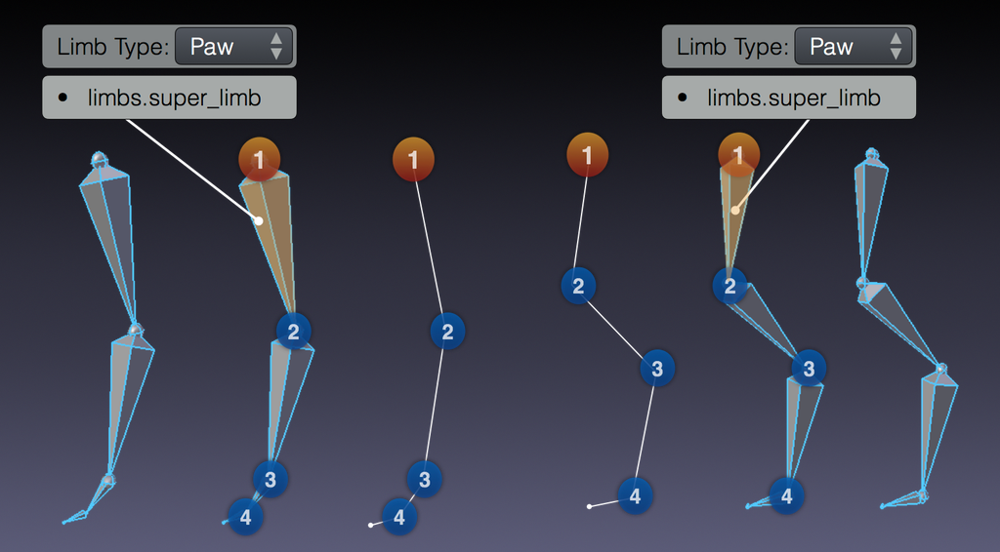

Limbs¶
Các loại rig này xử lý việc tạo nhiều kiểu chi khác nhau cùng tính năng của chúng, như ngón tay.
limbs.simple_tentacle¶
Sẽ tạo một chuỗi xúc tu b-bone đơn giản có thể uốn và co giãn, với tùy chọn sao chép độ xoay cục bộ từ bone trước sang bone sau để dùng trong những trường hợp như ngón tay.
Yêu cầu: Một chuỗi gồm ít nhất hai bone connected.
- Automation Axis (X, Y, Z, None)
Bật tự động hóa trên trục được chọn. Có thể chọn nhiều trục hoặc không chọn trục nào bằng cách giữ Shift-LMB. Khi bật, các bone control phía sau sẽ sao chép độ xoay cục bộ từ các bone phía trước. Tùy chọn này được truy cập trong các control của rig hoàn thiện dưới dạng một constraint Copy Rotation và có thể bị tắt cả sau khi rig đã được tạo, hoặc lúc animation.
- Assign Tweak Layers
Nếu bật, cho phép đặt các tweak control vào bone collection khác với các control chính.
limbs.super_finger¶
Sẽ tạo một chuỗi ngón tay có thể uốn và co giãn với một bone master control điều khiển độ xoay của mọi khớp thông qua scale của nó.
Yêu cầu: Một chuỗi gồm ít nhất hai bone connected.
- Bend Rotation Axis (Automatic, X, Y, Z, -X, -Y, -Z)
Định nghĩa trục xoay tự động được liên kết với scale của master bone.
- B-Bone Segments (integer)
Định nghĩa số segment b-bone mà mỗi tweak control sẽ được chia thành.
- IK Control
Tạo một cơ chế IK rất đơn giản với chỉ một control.
IK bắt đầu làm việc với dáng ngón tay được định bởi các control FK rồi điều chỉnh nó để đầu ngón tay chạm vào IK control. Nó được thiết kế như một công cụ để tạm giữ đầu ngón tay ghim vào bề mặt nó chạm vào, chứ không phải một hệ thống tạo dáng đầy đủ tính năng.
Để cải thiện hiệu năng, parent có thể chuyển đổi của IK control chỉ chứa một tùy chọn duy nhất bên cạnh None. Vì vậy, khuyên bạn thêm một control 'vật cầm' dùng rig basic.raw_copy để làm parent chung cho các ngón tay với một parent switch đầy đủ chức năng.
- IK Local Location
Chỉ định giá trị của tùy chọn Local Location cho các IK control, tùy chọn này quyết định các kênh vị trí được căn theo hướng cục bộ của control hay theo world.
- Assign Tweak Layers
Nếu bật, cho phép đặt các tweak control vào bone collection khác với các control chính.
- Assign Extra IK Layers
Nếu bật, cho phép đặt IK control bổ sung vào bone collection khác với các control chính.
Ghi chú
Rotation Axis (trong trường hợp limbs.super_finger là Bend Rotation Axis) ảnh hưởng đến roll của các bone được tạo. Chế độ Automatic tính lại roll của các bone được tạo, còn bất kỳ chế độ Manual nào đều sao chép roll của các bone meta-rig.
limbs.super_limb¶
Một wrapper tương thích ngược cho limbs.arm, limbs.leg và limbs.paw.
limbs.arm¶
Sẽ tạo một cánh tay đầy đủ tính năng, có thể uốn và co giãn, tùy theo các tùy chọn do người dùng định nghĩa.
Yêu cầu: Một chuỗi gồm ba bone connected (upper_arm, forearm, hand).

Các bone cần có của arm.¶
- IK Wrist Pivot
Tạo một control con bổ sung của hand IK control, xoay quanh đuôi của bone bàn tay.
- Rotation Axis (Automatic, X, Z)
Định nghĩa trục uốn cho chuỗi IK. Chuỗi FK sẽ có mức xoay hoàn toàn tự do trên mọi trục.
- Limb Segments (integer)
Định nghĩa số tweak control bổ sung mà mỗi bone chi sẽ có trên rig hoàn thiện.
- B-Bone Segments (integer)
Định nghĩa số segment b-bone mà mỗi tweak control sẽ được chia thành.
- Custom IK Pivot
Tạo một control bổ sung ở cuối chi IK cho phép xoay nó quanh một pivot đặt tùy ý.
- Assign FK Layers
Nếu bật, cho phép đặt chuỗi FK vào bone collection khác với các bone IK.
- Assign Tweak Layers
Nếu bật, cho phép đặt các tweak control vào bone collection khác với các bone IK.
limbs.leg¶
Sẽ tạo một chân đầy đủ tính năng, có thể uốn và co giãn, tùy theo các tùy chọn do người dùng định nghĩa.
Yêu cầu: Một chuỗi gồm bốn bone connected (thigh, shin, foot, toe) cùng một bone con không connected của foot để dùng làm pivot gót chân.

Các bone cần có của leg.¶
- Foot Pivot (Ankle, Toe, Ankle & Toe)
Chỉ định vị trí đặt pivot của IK control chính, hoặc việc có tạo thêm một pivot control tại gốc ngón chân hay không.
- Separate IK Toe
Chỉ định rằng hai control ngón chân riêng biệt sẽ được tạo cho IK và FK thay vì dùng chung một bone. Điều này là cần thiết để có snap IK-FK hoàn toàn chính xác trong mọi dáng có thể có.
- Toe Tip Roll
Tạo một slider để chuyển control gót chân sang pivot ở đầu ngón chân thay vì ở gốc (đối với roll, đương nhiên điều này chỉ áp dụng cho roll về phía trước).
- Rotation Axis (Automatic, X, Z)
Định nghĩa trục uốn cho chuỗi IK. Chuỗi FK sẽ có mức xoay hoàn toàn tự do trên mọi trục.
- Limb Segments (integer)
Định nghĩa số tweak control bổ sung mà mỗi bone chi sẽ có trên rig hoàn thiện.
- B-Bone Segments (integer)
Định nghĩa số segment b-bone mà mỗi tweak control sẽ được chia thành.
- Custom IK Pivot
Tạo một control bổ sung ở cuối chi IK cho phép xoay nó quanh một pivot đặt tùy ý.
- Assign FK Layers
Nếu bật, cho phép đặt chuỗi FK vào bone collection khác với các bone IK.
- Assign Tweak Layers
Nếu bật, cho phép đặt các tweak control vào bone collection khác với các bone IK.
limbs.paw¶
Sẽ tạo một bàn chân thú đầy đủ tính năng, có thể uốn và co giãn, tùy theo các tùy chọn do người dùng định nghĩa.
Yêu cầu: Một chuỗi gồm bốn hoặc năm bone connected (thigh, shin, paw, digit tùy chọn, toe).

Các bone cần có của paw trước/sau.¶
- Rotation Axis (Automatic, X, Z)
Định nghĩa trục uốn cho chuỗi IK. Chuỗi FK sẽ có mức xoay hoàn toàn tự do trên mọi trục.
- Limb Segments (integer)
Định nghĩa số tweak control bổ sung mà mỗi bone chi sẽ có trên rig hoàn thiện.
- B-Bone Segments (integer)
Định nghĩa số segment b-bone mà mỗi tweak control sẽ được chia thành.
- Custom IK Pivot
Tạo một control bổ sung ở cuối chi IK cho phép xoay nó quanh một pivot đặt tùy ý.
- Assign FK Layers
Nếu bật, cho phép đặt chuỗi FK vào bone collection khác với các bone IK.
- Assign Tweak Layers
Nếu bật, cho phép đặt các tweak control vào bone collection khác với các bone IK.
limbs.front_paw¶
Một biến thể phái sinh của limbs.paw với IK mở rộng phù hợp để dùng cho bàn chân trước. IK bổ sung này giới hạn mức thay đổi của góc giữa bone shin và bone paw (thứ 2 và thứ 3) khi IK control chính di chuyển và xoay.
Để có kết quả tốt nhất, bone shin không nên song song với thigh hay paw ở dáng rest, tức là mọi khớp của bàn chân nên có một mức uốn nhất định.
- Heel IK Influence
Mức ảnh hưởng của IK mở rộng. Ở mức đầy đủ, việc xoay IK control chính hoặc bone digit sẽ không ảnh hưởng đến độ xoay của bone paw, còn giá trị thấp hơn thì cung cấp chút pha trộn.
limbs.rear_paw¶
Một biến thể phái sinh của limbs.paw với IK mở rộng phù hợp để dùng cho bàn chân sau. IK bổ sung này cố giữ bone thigh và bone paw (thứ 1 và thứ 3) gần như song song khi IK control chính di chuyển và xoay.
Để có kết quả tốt nhất, bone thigh và bone paw nên bắt đầu gần như song song ở dáng rest.
limbs.super_palm¶
Sẽ tạo một hệ thống lòng bàn tay dựa trên khoảng cách giữa các bone lòng bàn tay.
Yêu cầu: Ít nhất hai bone con của cùng một parent. Property phải được đặt trên các bone lòng bàn tay phía trong (hãy hình dung như xương đốt ngón trỏ), control của rig sẽ xuất hiện trên bone lòng bàn tay cuối (hãy hình dung như xương đốt ngón út).
- Both Sides
Tạo control ở cả hai phía của lòng bàn tay, với mức ảnh hưởng lên các bone phía trong được pha trộn giữa hai bên.
- Primary Rotation Axis (X, Z)
Định nghĩa trục xoay tự động sẽ dùng trên các bone lòng bàn tay.
limbs.spline_tentacle¶
Loại rig này cài đặt một xúc tu linh hoạt với hệ thống IK dùng constraint Spline IK. Các bone control định nghĩa các điểm điều khiển của một đường cong Bezier, và chuỗi bone bám theo đường cong đó.
Các điểm điều khiển của đường cong được xếp vào ba nhóm: đầu, giữa và cuối. Các control giữa luôn hiển thị và active, còn hai nhóm kia có thể được hiện và ẩn động bằng các property; khi bật, chúng xuất hiện cạnh control đầu/cuối cố định tương ứng và có thể được di chuyển từ đó.
- Extra Start Controls
Chỉ định số control đầu tùy chọn sẽ được tạo.
- Middle Controls
Chỉ định số control giữa sẽ được tạo.
- Extra End Controls
Chỉ định số control cuối tùy chọn sẽ được tạo.
- Tip Control:
Chỉ định cách việc kéo giãn đường cong và bone control cuối cùng hoạt động:
- Stretch To Fit
Kéo giãn toàn bộ chuỗi bone để khớp chiều dài của đường cong do các control định nghĩa.
Một control twist phần cuối được tạo để điều khiển twist dọc chuỗi.
- Direct Tip Control
Tạo một control cuối IK, trực tiếp điều khiển bone cuối cùng của chuỗi tương tự cách IK thông thường hoạt động với chi, đồng thời điều khiển điểm cuối của đường cong bezier. Các bone giữa của chuỗi co giãn để bám theo đường cong và lấp khoảng trống.
Rig tự động suy ra twist tối đa 180 độ dựa trên hướng của control cuối. Mức twist lớn hơn phải được chỉnh qua slider End Twist Estimate để tránh hiện tượng lật.
- Manual Squash & Stretch
Chế độ này cho phép kiểm soát hoàn toàn thủ công việc scale chuỗi, trong khi chuỗi phủ được càng nhiều đường cong càng tốt với chiều dài hiện tại của nó.
Control đầu của chuỗi quản lý scale squash & stretch đồng nhất của nó, còn control twist cuối quản lý cả twist của chuỗi lẫn scale tại đầu mút (được pha trộn dần dần dọc chiều dài).
- Radius Scaling
Cho phép scale các control để điều khiển độ dày của chuỗi thông qua đường cong.
- Maximum Radius
Chỉ định scale tối đa mà tính năng Radius Scaling cho phép.
- FK Controls
Tạo một chuỗi control FK và snap IK-FK.
- Assign FK Layers
Nếu bật, cho phép đặt chuỗi FK vào bone collection khác với các bone IK.